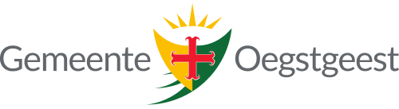
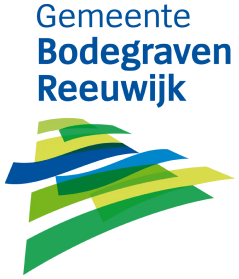

Het platform voor integrale besluitvorming
Maatschappelijke opgaves oplossen, dat is het doel van publieke besluitvorming. Wij helpen overheden om beter te besluiten.

Van een lappendeken aan tools naar één dossier
Elk stuk van een besluit komt in hetzelfde dossier terecht, van het eerste idee tot het e‑depot, en blijft daar.
Volg één besluit van eerste idee tot e‑depot
Ondersteuning van besluitvorming is nu vaak een lappendeken aan tools. Bij Qualigraf staat het onderwerp centraal en blijft het hele besluit in één dossier.


Voorbeeldschermen met fictieve gegevens
Voorbeeldgemeente en fictieve agendapunten. De Gemeentewet noemt geen vast aantal dagen voor de oproep, dat regelt jullie reglement van orde. Vraag hoe het bij jullie werkt.
Voorbeeldgemeente en fictieve agendapunten. De Gemeentewet noemt geen vast aantal dagen voor de oproep, dat regelt jullie reglement van orde. Vraag hoe het bij jullie werkt.
Een besluit leeft langer dan de vergadering. Qualigraf houdt elk stuk, elke stemming en elke afspraak vindbaar in één dossier.
Dit zijn de koplopers waarvan je kunt leren
Gemeenten in Nederland besluiten al met Qualigraf, en het platform telt meer dan 400 klanten in Europa.
Ontwikkeld in NederlandHet platform wordt in Nederland gebouwd en ondersteunt teams in vier landen.
Van idee tot e‑depotVan het eerste idee tot de automatische publicatie op de website en archivering in een e‑depot.
Ook los beschikbaarRaadsinformatie en AI Notulen zijn ook als losse oplossing beschikbaar.




Eén platform voor het hele besluit
Vergaderen, Workflow, Raadsinformatie, de Langetermijnagenda en Publiceren werken allemaal in hetzelfde dossier.


Aantoonbaar compliant en veilig
Qualigraf is onafhankelijk gecertificeerd en verwerkt gegevens volgens de AVG.


- ISO 27001Informatiebeveiliging, onafhankelijk gecertificeerd
- ISO 9001Kwaliteitsmanagement, onafhankelijk gecertificeerd
- AVGPersoonsgegevens verwerkt volgens de AVG
- Volledige audit trailElke stap in het besluit vastgelegd
Jullie aanspreekpunt in Dordrecht
Qualigraf Nederland zit in Dordrecht, waar ook het platform wordt gebouwd.

Laten we samen ontdekken hoe Qualigraf jullie besluitvorming moderniseert, vereenvoudigt én transparanter maakt. rob@qualigraf.nl
Betere besluitvorming begint met contact opnemen
Een gesprek rond jullie eigen vergadering van de gemeenteraad op , met jullie agenda, jullie paraafroute en jullie raad.
Of bel Rob op 06 53 94 55 36